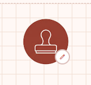
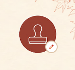
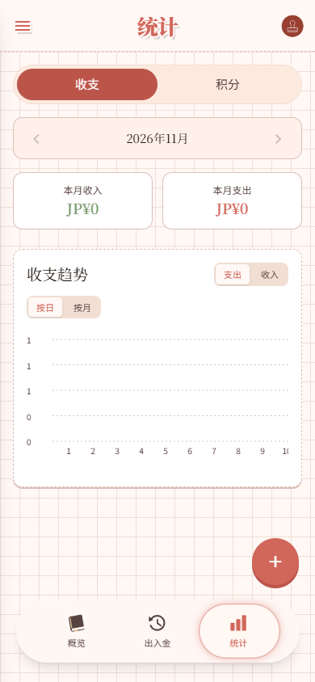
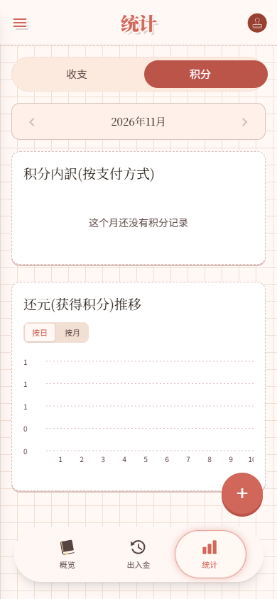
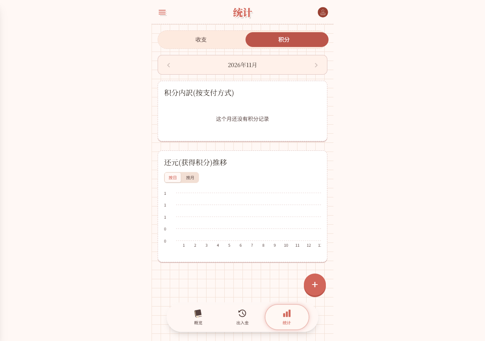

PigBang 日历与头像更新 · 定稿
2026-11-21 · 1.0.0-20261121-dev.1 · 用户确认预览后接入的真实页面截图。统计页使用隔离空账目，尚待 iPhone 真机验证。
B-91 头像编辑按钮
12px 铅笔、26px 浅底徽章、44px 点击范围。夏季与秋季光效跟随真实圆底，徽章独立于头像裁切。
默认
秋季
夏季
R-57 统一月份导航
只保留页顶月份导航。按日显示当月，按月显示当年；切换月份清除旧柱选择，收支、积分和分类明细统一周期。
收支 · 手机宽度
积分 · 手机宽度
积分 · 电脑宽度
R-55 / R-56 交互
日历横向滑动切月，纵向手势仍用于滚动。区间外点选只延长对应一端，另一端保留；确认后保存，取消时丢弃草稿。
已确认的修改前后预览